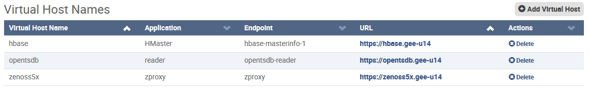

The Virtual Host Names table lists the virtual host names defined
for the application.
- The Add Virtual Host button is above the table,
at the right side. It displays the Add Virtual Host dialog.
- Values in the Virtual Host Name column are used as subdomain
names in virtual host URLs.
- Values in the URL column are a combination of
- the subdomain name (from the Virtual Host Name column)
- the IP address or hostname used to log in to the Control Center web interface
- Virtual hosts simplify access to services. Deleting a virtual host does not delete the
service associated with the virtual host.